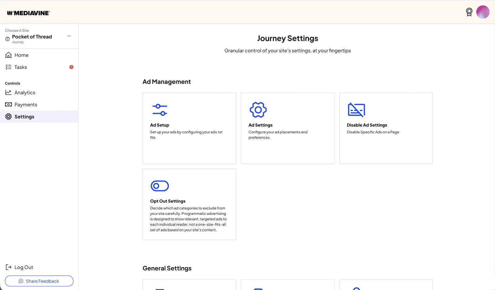
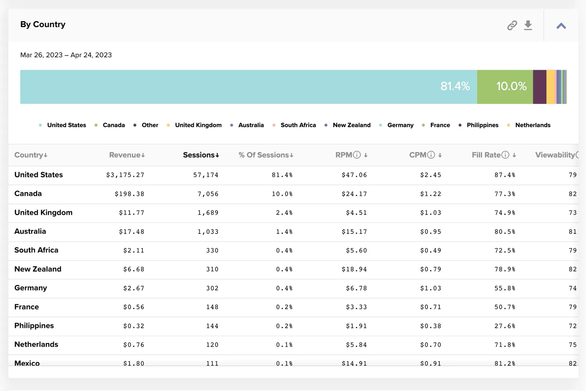
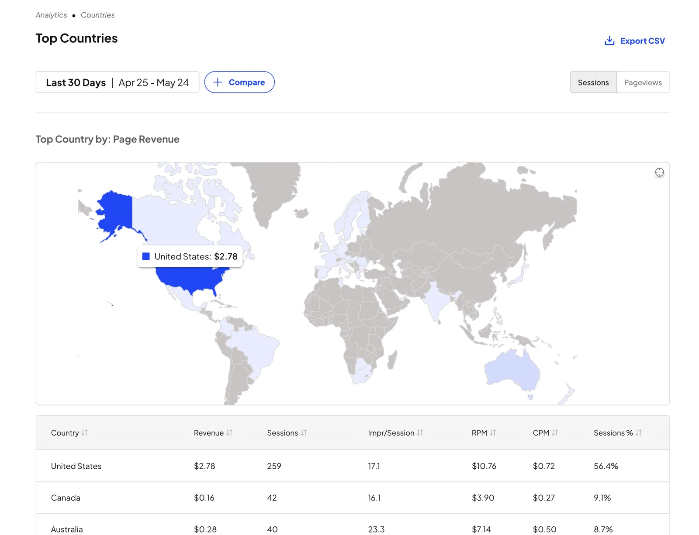
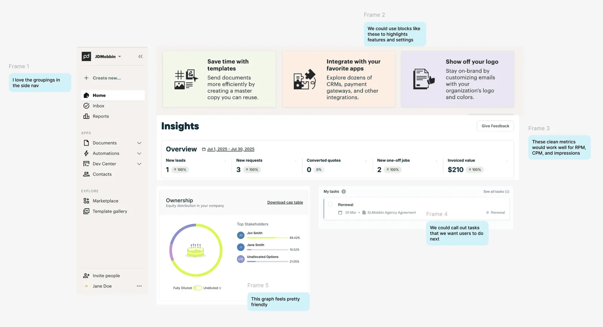
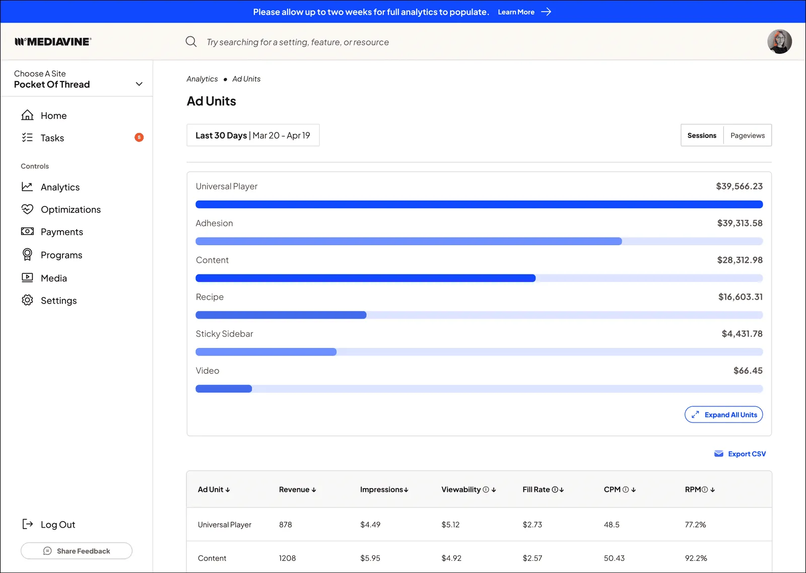

Redesigning the Mediavine Publisher Dashboard
As the Director of User Experience leading our product design team, my primary goal was to tackle a growing challenge in our product ecosystem: a disjointed user experience. Over time, our tools had expanded, leaving our users split between a legacy analytics dashboard and newer interfaces like Grow, which managed a separate set of features. While our users appreciated the data they could get from the legacy dashboard, they often mentioned that it was clunky, hard to navigate, and visually dated. This project would allow us to deliver a modern dashboard experience with the critical metrics our users rely on.

To accomplish this, I led a cross-functional initiative to completely redesign and unite the Mediavine Publisher Dashboard. The goal was to build an intuitive, mobile-first product that leveraged our existing design infrastructure while scaling for future feature development. I am very proud of the work my team and I did to create the new dashboard within the given constraints and hearing positive feedback from our users was incredibly validating once we launched.
The Vision & Strategic Goals
I established three core pillars to guide our design strategy:
- Unify the Experience: Bridge the gap between the separate platforms to create a singular, cohesive home for our publishers.
- Optimize Usability: Transform data-heavy layouts into clean, actionable, and intuitive insights.
- Scaleable Systems: Move away from ad-hoc UI design and establish a framework for rapid building and long-term adaptability.
Guardrails & Core Requirements
To ensure structural integrity and seamless adoption, I aligned the design and engineering teams around a strict set of functional constraints:
Leverage Our Design System: We adopted the Material UI-based design system originally built for the Grow Dashboard. This gave us a proven, accessible foundation and immediately brought visual cohesion to the product ecosystem. Learn more about the MV Design System.
Atomic Design Architecture: We structured our design libraries using a strict atomic hierarchy. By breaking components down into reusable tokens and atoms, we unlocked the ability to rapidly prototype and adapt screens on the fly.
Mobile-First Design: The legacy dashboard was heavily optimized for desktop, but our data showed publishers increasingly checking metrics on the move. We shifted our philosophy to a mobile-first approach, optimizing dense financial and traffic data for smaller viewports.
Streamlined Information Architecture: My team eliminated complex nested menus and restricted top-level navigation items to reduce cognitive load and shorten the time-to-task for daily metrics.

Intuitive Data Visualization: We overhauled our charts and graphs, focusing on clear visual hierarchy so publishers could assess their performance and RPMs at a glance. We leaned heavily on user data to drive the layout of the metrics to make the most utilized ones the most accessible.


The Design Process
Leading a design team through a massive overhaul requires a balance between rigorous research and creative exploration. I structured our workflow into four distinct phases which helped break out the work into discreet deliverables:
1. Research & Discovery
With input from Product and Support, I directed my team to gather qualitative and quantitative insights directly from our user base. We systematically analyzed feedback from publisher Facebook groups, conducted targeted user interviews, and synthesized pain points pulled from Support team escalations. We distilled our findings into themes and noted the frequency of each request, pain point, and issue which helped guide the product strategy.
2. Ideation & The "Frankenstein" Method
With a clear understanding of user friction, we entered my personal favorite phase: the ideation phase. I encouraged the design team to pull broad inspiration into a massive collaborative "frankenstein" file—mixing layout concepts, data visualizations, and UI patterns from across the industry to conceptualize what might work for our unique dataset. After several of these brainstorming sessions, we had landed on an overall layout we were excited to test against our actual content.

3. Iteration & System Refinement
Once we isolated the strongest concepts, we refined them against our atomic design system. We transformed raw ideas into high-fidelity screens, ensuring every component adhered to our established Material UI constraints. In this phase, we also pulled in Engineering to sanity-check the feasibility of our designs and to gain alignment on each feature that would be included.
4. Stakeholder Buy-In & Functional Prototyping
After presenting the strategic direction to executive stakeholders and securing buy-in, we moved quickly into production. We developed functional front-end shells for key pages, allowing stakeholders to experience the navigation and responsive layouts in a true browser environment before deep backend engineering began. We worked closely with Engineering at each step to make sure all states were defined, user interactions were clear, and testing was conducted during development.

Challenges
A project of this scale is rarely without friction. As a manager, navigating these constraints required careful negotiation and resource management, which is one of my strong suits.
Because of the aggressive timeline for launch, as defined by executive leadership, it was critical to balance a complete architectural redesign with cross-functional collaboration and strict scope management. Specifically, I worked closely with product teams and engineering managers to establish the product scope and sprint planning to make sure the launch was a success. Throughout the project, I was responsible for maintaining the agreed-upon scope while also allowing for flexibility when an unpredicted issue arose or a feature needed to be added.
One of our biggest technical and design constraints was that we could not simply shut down the legacy dashboard or halt the Grow ecosystem. We had to architect a design solution that coexisted seamlessly alongside active platforms, ensuring zero disruption to live publisher revenue tracking during the rollout.

The Launch & Go-To-Market Strategy
As we moved closer to launch, my focus shifted from core execution to validation and user adoption. Specifically, I was responsible for gathering user feedback to validate our design choices and refine edge-case interactions.
To do this, I took a multi-faceted approach which included:
- Conducting remote and in-person user interviews with our early adopters and synthesizing the findings.
- Previewing the new interface during publisher webinars to build excitement and prepare our users for the transition. I also fielded live questions from users interested in the new platform.
- Delivering a live demo and hosting hands-on workshops at MVCon to give our community an in-person, interactive look at the future of the platform.
- Collaborating closely with our Support and Product Marketing teams to provide documentation, video walkthroughs, and migration guides.
Reflections & Impact
Success was measured by adoption of the new platform, overall user sentiment, and decreased usage of the legacy dashboard. By four months post-launch, nearly half of all publishers had adopted the new dashboard and were using it weekly as their main source of analytics. User sentiment was very positive which we gauged by comments in Facebook groups, subreddits, support tickets, in-app surveys, and user interviews. Finally, usage of the legacy dashboard slowly decreased as users got more familiar and comfortable with the new platform.
In the next phase of the project, the Grow platform will be sunset and all of its features rolled into the new Dashboard. After that, the legacy dashboard will also be sunset so that all users can utilize one central dashboard for all of their Mediavine experiences.
By anchoring this redesign in a robust atomic system and focusing heavily on user-driven insights, I am proud to have helped transform the publisher dashboard from a fragmented utility into a cohesive, scalable asset.